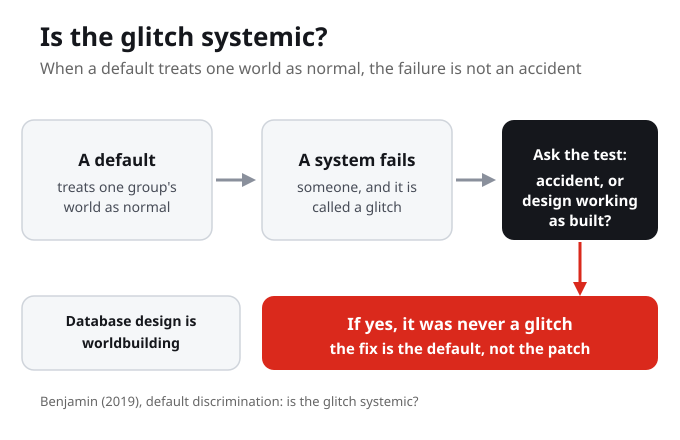
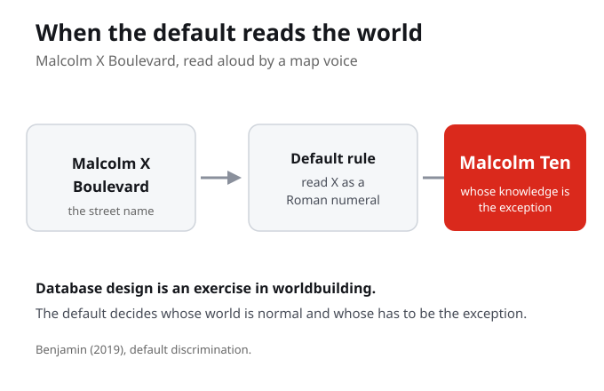
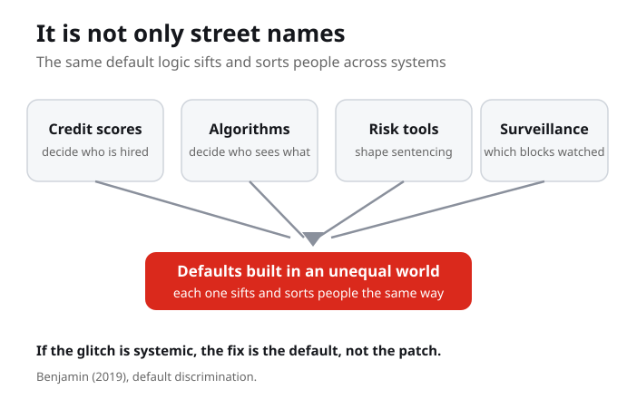

Part I gave you the lens, and now Part II takes the New Jim Code apart, one dimension at a time. Last week was dimension one, engineered inequity: a design that amplifies a gap on purpose. This week is dimension two, default discrimination: harm that arrives through the default, when no one is looking. The four dimensions trade visibility for reach, so the harm gets quieter as we go.
Engineered inequity needs someone to build the gap wider. Default discrimination needs only that everyone looked away and left the old inequity sitting in the defaults.
What is the difference between a harm someone designs on purpose and a harm that arrives through a default?

Default discrimination is harm that arrives through the defaults of a system: the settings, the data, the assumptions that treat one group's world as normal. No one has to type a slur into the code, because the inequity is already in the defaults and no one designed against it. So when a system fails someone and the failure is called a glitch, ask whether the glitch is systemic. If yes, the fix is the default, not the patch.
Default discrimination needs no one to type a slur into the code. The inequity is already in the defaults, and the harm arrives because no one designed against it.
When a system fails someone and the failure is called a glitch, how would you decide whether it is an accident or a design working as built?
Here is the question that holds the week: is the glitch systemic? A glitch is supposed to be small and temporary, an accident someone will patch. Benjamin asks us to slow down on that word, because sometimes the failure we call a glitch is the system working exactly as it was built, in a world that was already unequal.
The word glitch promises something small and temporary. Benjamin asks us to slow down on it, because the failure we call a glitch is sometimes the system working exactly as it was built.
If the failure is the predictable result of how the system was built, who benefits from still calling it a glitch?
So default discrimination is harm that arrives through the defaults of a system, the settings, the data, the assumptions that treat one group's world as normal. No one has to type a slur into the code. The inequity is already in the defaults, and no one designed against it.
Default discrimination is harm that arrives through the settings, the data, and the assumptions that treat one group's world as normal. It does not require a racist designer, only an inequity left in the defaults.

Benjamin gives a small example. A map voice reads Malcolm X Boulevard as Malcolm Ten, reading the X as a Roman numeral because that is the default. A tiny glitch, but ask the bigger question: whose knowledge is the default, and whose has to be the exception. She has a phrase for this: database design is an exercise in worldbuilding. People build a picture of the world into a system, and in a society shaped by racism that picture carries the old order forward.
A map voice reads Malcolm X Boulevard as Malcolm Ten because reading the X as a Roman numeral is the default. The tiny glitch points to a bigger question: whose knowledge is the default, and whose has to be the exception.
If database design is an exercise in worldbuilding, what world is being built, and who is left out of it?
Calling design worldbuilding flips who is in charge. Programmers are not just storing data, they are deciding who counts as normal. A worldview, the assumptions about who is normal, gets encoded as defaults, the data, settings, and categories, and that reproduces harm. Every default is a small claim about whose world the rest of us have to live inside.
The default is invisible to the people it fits and a daily friction to everyone it does not. That is why naming the default matters: it makes the hidden claim about who is normal visible again.
Whose world is treated as the default in a system you use, and who has to adapt themselves to fit it?

And it is not only street names. Discriminatory design goes beyond explicit slurs in code. Credit scores get used to decide who is hired. Algorithms decide who sees which opportunity. Risk tools shape sentencing and parole. Surveillance decides which blocks get watched. Each one sifts and sorts people through defaults built in an unequal world. When a credit score quietly stands in for race or class, the bias hides inside a number that looks objective.
These tools sort people without ever using a slur. That is the point: the bias hides inside a number that looks objective and gets to skip the argument.
Here is how to spot it in any system you study this week. Ask three questions. Whose world is treated as the default here, and who has to adapt to fit it? When the system fails a group, is the failure an accident, or the design working as built? And if the fix is not patching the glitch but changing the default, what default would you change first? The third question is the hardest, because it forces you past complaint into design.
It is easy to say a system is unfair. It is harder, and more useful, to name one default you would rebuild.
If the fix is not patching the glitch but changing the default, what default would you change first?
If the harm comes from the default, then patching each glitch never ends. Patching glitches forever is not a bug in the response, it is a model that looks like care while leaving the source untouched. Equitable design changes the default itself, it redesigns what counts as normal. So ask who benefits from the word glitch, because the label protects whoever built the default. If the harm is just an accident, then no one has to redesign and no one has to answer for it.
Asking who benefits from the word glitch points the analysis at power, not code. The label closes the case before anyone asks whether the failure is rare bad luck or the system doing exactly what it was built to do.
When a system fails someone and it is called a glitch, who benefits from that word?
Now make it your own. Add a default-discrimination entry to your map this week. Choose a system where a failure is waved away as a glitch, then name the default behind it, who it treats as normal, and who carries the cost. The strongest entries are ones where the same group keeps getting caught by the same accident, because that is the sign the word glitch was hiding a pattern. Keep it privacy-safe: describe the system, not anyone's private data.
When you pick a failure that was waved away as a glitch, you are testing whether the word was hiding a pattern. A repeated accident that lands on the same group is rarely an accident.
Whose world is the default in the system you chose, and who has to adapt, or be misread?
Harm arrives through the defaults of a system, the settings, the data, and the assumptions that treat one group's world as normal. No one has to type a slur into the code, because the inequity is already in the defaults and no one designed against it.
A glitch is supposed to be small and temporary, an accident someone will patch. Benjamin asks us to slow down on that word, because sometimes the failure we call a glitch is the system working exactly as it was built.
People build a picture of the world into a system, and in a society shaped by racism that picture carries the old order forward. The map that reads Malcolm X as Malcolm Ten shows whose knowledge is set as the default.
Credit scores, hiring algorithms, risk tools, and surveillance all sift and sort people through defaults built in an unequal world. When the answer to is the glitch systemic is yes, the fix is the default, not the patch applied faster.